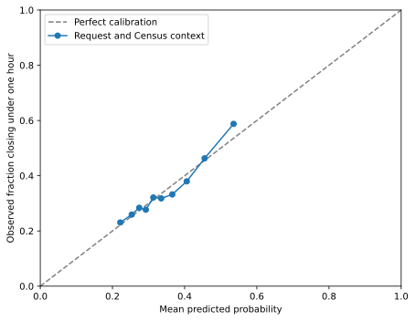

Predictive modeling uses information available at a defined time to estimate an outcome that is not yet known. This chapter asks whether fields available when an illegal-parking request is created can help identify requests that close in under one hour. The model includes request detail, borough, grouped creation time, business-day status, and area context from the Census-linked table:
population density;
household vehicle availability; and
median household income.
Request timing uses four six-hour groups and classifies Labor Day and the weekend as non-business days. The remaining four dates are business days.
The analysis uses the same one-week, request-level data as earlier chapters. It predicts recorded closure time; it does not show that request timing or area characteristics cause a request to take longer or establish how predictions would perform in a different week.
The under-one-hour target is a modeling choice, not a documented agency response standard. In the 12,975 eligible requests, 4,478 (34.5%) closed in under an hour and 8,497 (65.5%) took at least an hour. Recorded closure time is only a proxy for handling time: it may include dispatch, travel, queueing, reporting, and administrative steps. The analysis can predict this recorded outcome from observed fields, but it cannot isolate those processes.
9.1 Frame the Prediction
Before fitting a model, specify what it will predict and what information it can use:
Unit: one illegal-parking request from the distributed week.
Target: one if recorded closure time is under one hour, and zero otherwise. Requests without a closure time cannot be labeled and are excluded.
Prediction time: request creation. Closure time and later processing fields are unavailable then and must not be predictors.
Request features: problem detail and borough, recorded when the request is created, plus its six-hour creation-time group and whether the date is a business or non-business day.
Area features: population density, median household income, and the estimated share of households with a vehicle, linked through the ZIP label (U.S. Census Bureau, 2024a, 2024b).
The density measure divides ACS population by 2024 Gazetteer ZCTA land area; the vehicle share is one minus the estimated fraction of households with no vehicle. These describe area context, not curb capacity or individual behavior. The ACS estimates cover 2020–2024, precede the request week, and have sampling uncertainty. We do not calculate the vehicle share’s uncertainty from the published margins of error.
The ZIP label links a request to a ZIP Code Tabulation Area (ZCTA), but the two geographies are related rather than identical, so this is an approximate match (U.S. Census Bureau, 2023, 2026). ZIP digits are labels, not quantitative predictors. A later benchmark uses the ZIP as a category to ask a different predictive question.
The prediction question is: among requests from this week, how well can the recorded fields distinguish requests that close in under an hour? This is prediction within the observed setting. It is not a question about whether a predictor causes a longer closure, nor does it show performance in a future week. The four checks in Section 5.1 still apply: a model cannot repair an unclear target, an invalid measurement, an inadequate scope, or weak evidence.
9.2 Establish a Baseline
A baseline sets a reference that a more complex model must improve. Because 34.5% of eligible requests close in under an hour, predicting the majority class for every request already gives roughly 65.5% accuracy. That result does not distinguish requests: it labels every case as taking at least an hour. Accuracy alone would therefore make a useless classifier look respectable.
The analysis starts from load_parking_requests() rather than repeating the import and filtering workflow from Chapter 6. It links the requests to the Census context already documented in Section 6.4. The preparation functions leave the source request data and the Census lookup unchanged. The merge indicator identifies ZIP labels with no matching ZCTA.
from scripts.parking_requests import ( attach_zcta_context, load_parking_requests, load_zcta_context,)import pandas as pdfrom matplotlib_inline.backend_inline import set_matplotlib_formatsfrom sklearn.model_selection import train_test_splitset_matplotlib_formats("svg")parking = load_parking_requests()with_context = attach_zcta_context(parking)matched = with_context["_merge"].eq("both")pd.Series({"requests in one-week extract": len(parking),"unmatched ZIP labels": int((~matched).sum()),})
requests in one-week extract 13040
unmatched ZIP labels 7
dtype: int64
The ZIP-to-ZCTA link matches 13,033 of 13,040 requests. For a complete-case model, each matched request also needs all three area measures and the request fields used below. The next check reports missing area context and selects eligible requests.
matched requests without income estimate 58
matched requests missing an area measure 58
eligible requests 12975
matched ZCTAs represented 176
dtype: int64
Among matched requests, 58 lack at least one area measure, including nine with no household vehicle estimate because their ACS household denominator is zero. The resulting analysis has 12,975 requests from 176 ZCTAs. The next step derives timing features from the creation timestamp. Four six-hour intervals describe the hour, while the weekend and Labor Day form the three non-business days in this week.
day_type
Business day 4
Non-business day 3
Name: created_at, dtype: int64
The four other dates are business days. This distinction is descriptive for one week, which contains only one holiday. The outcome marks closures under one hour; closure time itself is excluded from the predictors. The feature table keeps the ZIP label for a later categorical benchmark, while the first model uses the other listed features.
under one hour 4478
at least one hour 8497
dtype: int64
The outcome has 4,478 requests under one hour and 8,497 at least one hour. The train-test split reserves one quarter of complete requests for evaluation and stratifies on this outcome to keep its proportion similar in both sets.
training requests 9731.000000
test requests 3244.000000
training target proportion 0.345083
test target proportion 0.345253
dtype: float64
The split contains 9,731 training requests and 3,244 test requests, with nearly identical target proportions. Fixing the random seed makes this example reproducible, while stratification controls only the class proportions. Requests from the same ZCTA can appear in both sets, so the test set evaluates new requests in areas represented during training rather than transfer to unfamiliar areas. Requests from each of the seven dates also appear in both sets, so the split does not test generalization to a new day, holiday, or week.
9.3 Use a GLM
Ordinary linear regression allows its fitted mean to take any real value and typically models the remaining variation with a constant-variance Gaussian distribution. A straight-line fit to a binary outcome can therefore predict values outside zero and one, while the outcome’s variance changes with its probability. A straight-line fit to a count can predict negative values, although counts cannot be negative; the spread of counts can also change with their mean. These limitations motivate a model that keeps a linear combination of predictors but uses a response distribution and link suited to the outcome.
A generalized linear model (GLM) combines a response distribution from the exponential family, a linear predictor, and a link function. The distribution describes an outcome’s conditional variation, while the link connects its conditional mean to the linear predictor (McCullagh & Nelder, 1989; Nelder & Wedderburn, 1972).
For observation \(i\), let \(Y_i\) be the outcome, \(\mathbf{x}_i\) its recorded predictors, and \(\mu_i = E(Y_i \mid \mathbf{x}_i)\) its conditional mean. A GLM relates that mean to \(k\) predictor terms through
where \(g\) is the link function, \(\eta_i\) is the linear predictor, \(\beta_0\) is the intercept, \(\beta_r\) is the coefficient for predictor \(x_{ir}\), and \(o_i\) is an optional known offset whose coefficient is fixed at one. Without an offset, \(o_i=0\). A coefficient changes the linked mean by \(\beta_r\) for a one-unit predictor difference, holding the other predictors fixed. Its effect on the original outcome scale depends on the inverse link and the starting mean.
The exponential family includes the Gaussian, Bernoulli, and Poisson distributions. For a continuous outcome, a Gaussian distribution with an identity link gives ordinary linear regression. For an event indicator, a Bernoulli distribution with a logit link gives logistic regression. For a nonnegative count, a Poisson distribution with a log link gives Poisson regression. These choices also imply different relationships between the conditional mean and variance. The next two examples use the same GLM setup but change the outcome, observational unit, distribution, and link.
9.3.1 Logistic regression
For request \(i\), let \(Y_i=1\) indicate that closure takes under one hour, and let \(p_i = \Pr(Y_i=1 \mid \mathbf{x}_i)\). Because a Bernoulli outcome has mean \(\mu_i=p_i\), the logit link gives the following special case of the GLM equation, with no offset:
The inverse-logit transformation maps any real-valued linear predictor to a probability between zero and one. Odds compare the probability of an event with the probability it does not occur. For example, a probability of 0.75 corresponds to odds of \(0.75/0.25=3\) to 1, while a probability of 0.5 corresponds to odds of 1 to 1. A coefficient describes a change in log odds, holding the other included predictors fixed; exponentiating it gives an odds ratio. An odds ratio is not a probability difference and does not by itself describe a causal effect.
The first GLM includes problem detail, borough, creation-time group, business-day status, population density, median household income, and household vehicle availability. The three area measures are standardized across training requests, so their odds ratios describe a one-standard- deviation difference in the request-weighted feature values. The formula interface compares each categorical level with a reference category and holds the other predictors fixed. These coefficients describe conditional associations in the fitted model, not changes caused by the area characteristics. In the coefficient table, each categorical label names the compared level; the level without a coefficient is the reference category (statsmodels Developers, 2026).
import numpy as npimport statsmodels.api as smimport statsmodels.formula.api as smfglm_data = X_train.copy()glm_data["short_closure"] = y_train
The training data pair each request’s predictors with its binary outcome. The formula below names the categorical predictors explicitly and standardizes the continuous area measures. This produces a logistic GLM with a binomial response and logit link. Requests in the same ZCTA share area context and may have related outcomes, so the fit uses standard errors clustered by ZCTA for its coefficient tests. Clustering changes the uncertainty estimates, not the fitted coefficients or predictions.
The fitted coefficients are on the log-odds scale. Exponentiating them gives odds ratios, which make categorical contrasts and standardized continuous effects easier to describe.
For a continuous area measure, its displayed odds ratio compares requests that differ by one training-set standard deviation, while the other model features are held fixed. For a categorical term, the odds ratio compares that level with the model’s reference category. An odds ratio above one indicates higher fitted odds of a closure under one hour for the stated contrast; it does not say how many percentage points the probability rises. The context values repeat across requests in the same ZCTA, so area patterns are supported by 176 distinct ZCTAs, not by treating each request as an independent area. These are conditional associations, not individual-level effects or causal estimates. They also rely on a linear relationship between each standardized area measure and log odds.
The coefficient table describes estimated effects but does not show how uncertain they are. For the three standardized area measures, a 95% interval for an odds ratio is obtained by exponentiating the corresponding coefficient interval. The p-value tests a zero coefficient, or equivalently an odds ratio of one, conditional on the other terms in this training-data model.
area_terms = [f"standardize({name})"for name in numeric_features]coefficient_intervals = glm_fit.conf_int().loc[area_terms]area_inference = pd.DataFrame({"odds ratio": np.exp(glm_fit.params.loc[area_terms]),"95% lower": np.exp(coefficient_intervals[0]),"95% upper": np.exp(coefficient_intervals[1]),"p-value": glm_fit.pvalues.loc[area_terms],})area_inference.round(3)
odds ratio
95% lower
95% upper
p-value
standardize(population_density_per_sqmi)
0.885
0.771
1.015
0.081
standardize(median_household_income)
1.211
1.073
1.367
0.002
standardize(share_households_with_vehicle)
0.810
0.693
0.946
0.008
The fitted odds of closing in under one hour are about 1.21 times as high for a one-standard-deviation increase in median household income and about 0.81 times as high for the same increase in household vehicle availability, with the other predictors fixed. Their intervals exclude one. The density odds ratio is about 0.88, but its interval includes one, so this analysis does not provide the same strength of evidence for a density association. The interval widths and p-values reflect ZCTA-clustered standard errors; they do not account for shared conditions across nearby ZCTAs or for a different week.
Categorical predictors have several coefficients, one for each displayed level relative to its reference. A joint Wald test asks whether all of a predictor’s coefficients are zero after accounting for the other terms. The single-coefficient tests for area measures answer the same null hypothesis one predictor at a time.
At a 0.05 cutoff, problem detail and creation-time group have evidence of conditional association with short closure, as do median household income and household vehicle availability. Borough, business-day status, and population density do not cross that cutoff in this fit. Failing to cross it does not establish that their effects are zero. Nor does a small p-value measure practical importance, improve held-out prediction by itself, or establish causation. These tests describe the unpenalized training fit; they are not p-values for the later regularized prediction model.
The evening hour group illustrates the distinction between a coefficient and a term test. Its fitted odds ratio is about 1.23 relative to 00:00–05:59, holding the other predictors fixed. The hour-group p-value of 0.0024 tests all three nonreference hour coefficients together; it does not by itself establish the significance of the evening contrast alone.
An odds ratio has a constant multiplicative interpretation on the odds scale, but its probability-scale change depends on the starting probability. For example, suppose an estimated odds ratio is 1.20 for a one-unit increase in a predictor. The fitted odds are 20% higher, holding the other predictors fixed. If the reference probability is 0.50, the corresponding probability is \(1.20/(1+1.20) \approx 0.545\), an increase of about 4.5 percentage points. At a different reference probability, the probability change would also differ. This example illustrates the conversion; it is not an estimate from the request model. For a categorical predictor, the odds ratio compares one level with the model’s reference level. State that reference and the predictor contrast whenever reporting a coefficient.
9.3.2 Poisson regression
To demonstrate a count outcome, this example changes the observational unit from requests to NYC ZCTAs. Let \(Y_j\) be the number of recorded requests matched to NYC ZCTA \(j\) during the study week, and let \(E_j\) denote its population in thousands. The Poisson distribution sets the conditional mean and variance to \(\mu_j\). A log link and the known offset \(o_j=\log(E_j)\) give the model
The offset fixes the coefficient of \(\log(E_j)\) at one, so the model compares expected counts relative to population exposure. The request ZIP labels are matched to ZCTAs by five-digit string, so the analysis uses Census areas rather than asserting that ZIP Codes and ZCTAs have identical boundaries. The code retains ZCTAs with zero requests by starting from the full context lookup and joining the observed counts to it.
ZCTAs modeled 194
ZCTAs with zero requests 15
ZCTAs excluded for missing exposure or density 27
matched requests represented 13024
dtype: int64
The left join keeps ZCTAs with no matched requests, which are valid zero counts rather than missing outcomes. Areas without positive population or a population-density estimate cannot enter this example and are excluded. The model uses population in thousands as its exposure and standardizes density so that its coefficient describes a one-standard-deviation contrast.
The offset makes \(\exp(\beta_1)\) a rate ratio: a one-unit increase in \(x_{j1}\) multiplies the expected number of requests per 1,000 residents by that amount, holding the other predictors fixed. For example, if \(\beta_1=0.20\), the rate ratio is \(\exp(0.20) \approx 1.22\), or about a 22% higher expected rate. A reference rate of 2 requests per 1,000 residents would become about 2.44. In the fitted model, the density coefficient is about \(-0.165\), which corresponds to a rate ratio near 0.85: the fitted request rate is about 15% lower for a one-standard-deviation increase in density, conditional on this model. Population is an imperfect denominator for illegal-parking reports: it does not measure vehicle activity, curb supply, or reporting behavior. Neither this fitted association nor the hypothetical calculation is a causal effect.
The Poisson model assumes that the conditional variance equals the conditional mean. The Pearson chi-square statistic divided by residual degrees of freedom gives a rough overdispersion check; values well above one can indicate that the Poisson variation is too restrictive. Calculate this diagnostic for the fitted model:
poisson_fit.pearson_chi2 / poisson_fit.df_resid
np.float64(40.70973698471978)
The ratio is about 40.7, which indicates substantial overdispersion for this specification. The Poisson fit therefore illustrates coefficient interpretation, but it is not an adequate final model for these counts. Its usual model-based standard errors and p-values do not support reliable variable-significance claims under this variance mismatch. Residual checks and the spatial structure of the areas also matter; a negative binomial or another count model may be more appropriate.
9.4 Check the Model
Model checks ask whether the chosen specification represents the observed relationships adequately. They differ from test-set evaluation: a model can fit the training records poorly, or fit them closely while predicting new records poorly. Logistic regression does not assume normally distributed errors or constant error variance as ordinary least squares does. Its assumptions instead concern the conditional Bernoulli response and the specified relationship between predictors and log odds. Residual and influence diagnostics can reveal unusual records or lack of fit, but no single diagnostic proves that a model is correct (Hosmer et al., 2013; Pregibon, 1981).
The current model makes several assumptions that can be checked only in part:
Each standardized area measure has a linear relationship with log odds.
The model is additive, so the detail contrast is the same across boroughs unless an interaction is included.
Sparse categories may produce unstable estimates.
Repeated Census values mean that area-level patterns are supported by 176 distinct ZCTAs rather than by the full request count.
Compare observed outcome rates with mean fitted probabilities across boroughs and across ordered groups of each continuous predictor, retaining the count in each group. Calibration is one check: predictions near 0.7 should correspond to an observed outcome rate near 0.7 among comparable requests (Calster et al., 2019).
The training-set summary below compares observed target rates with average fitted probabilities by borough. A large discrepancy can flag a lack of fit for a group, while close averages do not rule out errors for individual requests or interactions hidden within a borough. This is an in-sample check for the simple GLM, not an estimate of future prediction accuracy.
The evaluation section checks calibration for a fitted model. A calibration plot groups predictions into bins and compares each bin’s mean predicted probability with its observed fraction. The diagonal marks perfect calibration; binning is a summary, so it can conceal variation within a bin.
9.5 Evaluate Predictions
Evaluation asks how well the fitted model predicts requests it did not use for estimation or tuning. A training score is optimistic because the model has already adapted to those records. The reserved test set is used only after model choice; repeatedly adjusting a model after inspecting its test performance turns that set into another training resource and weakens the evaluation. Here, even a clean random holdout supports only a limited claim: it estimates performance for additional requests drawn under a similar one-week data-generating process.
Prediction metrics depend on the outcome’s scale. Numeric outcomes are evaluated by comparing predicted values with observed values; classification begins with class probabilities and applies a threshold to assign labels. The same train-test separation applies to both tasks, but their metrics answer different questions.
9.5.1 Numeric outcomes
For a numeric outcome, a residual is the observed value minus its prediction. Three common scores summarize different aspects of these residuals:
Mean absolute error (MAE) reports a typical miss in the outcome’s units. Root mean squared error (RMSE) uses the same units but gives large errors more influence because it squares them before averaging. The coefficient of determination, \(R^2\), compares squared prediction error with variation around the observed mean; a test-set value can be negative when predictions are worse than that reference (scikit-learn Developers, 2026c).
Recorded closure hours are numeric, so the held-out records also allow us to compare simple duration baselines. The training mean is the constant prediction that minimizes squared error; the training median minimizes absolute error. This comparison shows how numeric prediction metrics work without introducing a second fitted model.
The training-median baseline has lower MAE (2.67 hours) than the training-mean baseline (3.16 hours), while the mean baseline has lower RMSE (4.96 hours versus 5.25 hours). The right-skewed closure-time distribution lets a few long closures have a large effect on RMSE. Both \(R^2\) values are near zero or negative, so these constant forecasts capture little of the test-set variation. They provide reference errors, not an evaluation of a feature-based regression model.
9.5.2 Binary outcomes
For binary classification, a model often estimates a probability and then uses a threshold to assign one of two labels. The positive class is the category of interest, and changing the threshold changes the predicted labels and the resulting threshold-based scores.
The earlier coefficient tests concern associations in the unpenalized training fit. The held-out scores below answer a different question: how well do the fitted probabilities and labels predict requests outside that fit? A small coefficient p-value alone cannot answer it.
A confusion matrix compares observed classes with the classes predicted at a chosen threshold. Its four cells count correct and incorrect classifications. A true positive (TP) is an actual positive predicted as positive; a false negative (FN) is an actual positive predicted as negative. A false positive (FP) is an actual negative predicted as positive; a true negative (TN) is an actual negative predicted as negative. Rows below are actual classes and columns are predicted classes, matching the convention used by scikit-learn (scikit-learn Developers, 2026c).
Table 9.1: General layout of a binary confusion matrix.
Actual class
Predicted positive
Predicted negative
Total
Positive
TP
FN
TP + FN
Negative
FP
TN
FP + TN
Total
TP + FP
FN + TN
\(n\)
In this chapter’s parking analysis, a positive is a request that closes in under one hour, and a negative takes at least one hour. The illustrative probability threshold is 0.5, so predicted probabilities at or above 0.5 are classified as positive. The displayed test-set counts use this rule and the layout in Table 9.1.
Each metric uses a different margin or combination of cells. The numerator and denominator make clear which errors a score counts:
Quantity
Common names
Definition
True positive rate
TPR, sensitivity, recall, hit rate, probability of detection
\(TP/(TP+FN)\): fraction of actual positives flagged
False negative rate
FNR, miss rate
\(FN/(TP+FN)\): fraction of actual positives missed
True negative rate
TNR, specificity, selectivity
\(TN/(TN+FP)\): fraction of actual negatives not flagged
False positive rate
FPR, fall-out, false alarm rate
\(FP/(TN+FP)\): fraction of actual negatives flagged
Positive predictive value
PPV, precision
\(TP/(TP+FP)\): fraction of flagged requests that are positive
False discovery rate
FDR
\(FP/(TP+FP)\): fraction of flagged requests that are negative
Negative predictive value
NPV
\(TN/(TN+FN)\): fraction of unflagged requests that are negative
False omission rate
FOR
\(FN/(TN+FN)\): fraction of unflagged requests that are positive
Different fields use different names for several of the same ratios:
TPR, sensitivity, and recall all divide true positives by actual positives. They ask what fraction of requests that close in under an hour the model flagged.
PPV and precision divide true positives by predicted positives. They ask what fraction of flagged requests closed in under an hour.
Specificity and TNR measure the fraction of actual negatives not flagged; FPR is the fraction of actual negatives that were flagged.
F1 is the harmonic mean of precision and recall. It does not account for true negatives.
The complementary pairs TPR/FNR, TNR/FPR, PPV/FDR, and NPV/FOR each sum to one. The \(F_\beta\) score makes the precision-recall balance explicit:
The familiar F1 score sets \(\beta=1\). Values above one give more weight to recall, while values below one give more weight to precision; the choice should reflect the decision context rather than a universal preference (scikit-learn Developers, 2026c; Wikipedia contributors, n.d.).
Accuracy is the fraction of correct labels and can hide poor performance on one class when class frequencies differ. ROC AUC measures how well the model ranks positive cases above negative cases across thresholds; 0.5 indicates chance-level ranking and 1 indicates perfect ranking. AUC neither chooses a threshold nor checks whether probabilities are accurate. Log loss evaluates the probabilities themselves and penalizes confident errors. For observed binary outcomes \(y_i\) and predicted probabilities \(p_i\), it is
The threshold determines how missed short closures trade off against unnecessary alerts. The data do not specify the costs of these errors, so the example uses 0.5 only for illustration. A threshold selected for use would be chosen with training or validation data, then evaluated once on the held-out test set.
The baseline assigns every request the training-set target prevalence as its probability and predicts the majority class. The model one-hot encodes problem detail, borough, hour group, and day type; it standardizes the three area measures and fits logistic regression. A small function creates a fresh preprocessor for each model below, including the later cross-validation examples. The function is available to the exercises in scripts/modeling_preprocessing.py. Its encoder can handle a category in the test set that was absent from training.
Keeping the transformer inside a pipeline makes the training step learn categories and scaling only from training requests. Later, each validation fold will learn them from its own training portion. The function also accepts an additional transformer for the ZIP target-encoding comparison.
The baseline uses the training prevalence as the probability for every test request. The logistic pipeline fits its preprocessing and coefficients on training requests, then estimates a separate probability for each test request. Neither model uses test outcomes during fitting.
At the illustrative 0.5 threshold, the confusion matrix shows the actual outcomes in rows and predicted outcomes in columns. Displaying it before the summary scores makes the errors behind those scores visible.
from sklearn.metrics import confusion_matrixconfusion_table = pd.DataFrame( confusion_matrix(y_test, test_probability >=0.5, labels=[1, 0]), index=["Actual under one hour", "Actual at least one hour"], columns=["Predicted under one hour", "Predicted at least one hour"],)confusion_table
Predicted under one hour
Predicted at least one hour
Actual under one hour
153
967
Actual at least one hour
112
2012
Of the 1,120 requests that actually closed in under one hour, the model flags 153 and misses 967. Among the 2,124 requests that took at least an hour, it flags 112 and correctly leaves 2,012 unflagged. Thus, only 265 requests receive a positive label, even though 1,120 meet the target. The following scores summarize these counts and also assess the probabilities before any threshold is applied.
Accuracy, recall, specificity, precision, and F1 use the 0.5 labels. ROC AUC and log loss use the probabilities directly, so changing only the classification threshold would leave those two scores unchanged. The same scoring function applies to the baseline and model probabilities.
scores = pd.DataFrame({"Prevalence baseline": score_predictions(baseline_probability),"Request and Census-context logistic model": score_predictions(test_probability),}).Tscores
accuracy
ROC AUC
log loss
TPR / recall
specificity
precision
F1
Prevalence baseline
0.654747
0.500000
0.644458
0.000000
1.000000
0.000000
0.000000
Request and Census-context logistic model
0.667386
0.618092
0.622881
0.136607
0.947269
0.577358
0.220939
The prevalence baseline predicts no short closures at a 0.5 threshold because fewer than half of training requests have that outcome. It reaches 65.5% accuracy by labeling every request as taking at least an hour, but its recall and F1 are zero. Its ROC AUC is 0.5 because its probability is the same for every request.
The logistic model improves test accuracy only slightly, to 66.7%. Its recall is 13.7% (\(153/1{,}120\)), so it misses most short closures at this threshold. Its precision is 57.7% (\(153/265\)): among requests it flags as closing under one hour, about 58 in 100 actually do. Its specificity is 94.7% (\(2{,}012/2{,}124\)), showing that it rarely flags requests that take at least an hour. The F1 score of 0.221 reflects the low recall despite moderate precision.
The model’s ROC AUC of 0.618 exceeds the baseline’s 0.5, so its probabilities rank short closures above longer ones better than a constant score does. Its log loss of 0.623 is also lower than the baseline’s 0.644, indicating a modest improvement in probability estimates. These results show some predictive information, but they do not make 0.5 a suitable decision threshold for every use.
The calibration plot compares predicted probabilities with the observed fraction for the preliminary model. A probability estimate of 0.7 should correspond to an outcome rate near 0.7 among comparable predictions (Calster et al., 2019). The points group held-out requests into quantile bins, so the display can hide variation within each group.
import matplotlib.pyplot as pltfrom sklearn.calibration import calibration_curveobserved_rate, mean_probability = calibration_curve( y_test, test_probability, n_bins=10, strategy="quantile")fig, ax = plt.subplots(figsize=(6.4, 5.0))ax.plot([0, 1], [0, 1], color="0.5", linestyle="--", label="Perfect calibration")ax.plot(mean_probability, observed_rate, marker="o", label="Request and Census context")ax.set(xlim=(0, 1), ylim=(0, 1), xlabel="Mean predicted probability", ylabel="Observed fraction closing under one hour")ax.legend()fig.tight_layout()

Figure 9.1: Calibration of held-out probabilities for closures under one hour.
In Figure 9.1, most bin averages lie near the diagonal. The highest-probability tenth has a mean prediction of about 0.54 but an observed short-closure fraction of about 0.59, suggesting some underprediction in that group. This binned display checks the reported probabilities; it does not determine any single request’s true closure probability.
The ROC curve traces the true positive rate against the false positive rate as the probability threshold changes. In the table above, TPR is also called recall or sensitivity; FPR is one minus specificity. Each point represents a different threshold, so the curve displays the trade-off between finding more short closures and incorrectly flagging requests that take at least an hour. The area under this curve is the ROC AUC reported in the score table.
Figure 9.2: ROC curve for the preliminary request and Census-context model on held-out requests.
This first comparison gives the model a common reference and an initial held-out score. Its results are not the final model-selection result because the regularization strength still needs to be chosen using training data alone. A 0.5 classification threshold is convenient for illustration, not a universal decision rule. A real alerting system would set a threshold by considering the consequences of each kind of error with the people who would use the predictions.
9.6 Regularize a GLM
The model has many coefficients because problem detail and borough are one-hot encoded, and the later ZIP-label model adds a coefficient for each observed area. Some categories are sparse, while the Census measures can be correlated. An unpenalized fit can assign unstable, large coefficients to these patterns and perform worse on new requests. Regularization limits coefficient size to trade a small amount of training fit for more stable predictions.
Generalized linear models estimate coefficients by maximizing a distribution-specific likelihood. Regularization adds a penalty for large coefficients to the negative log-likelihood:
Here, \(\ell(\boldsymbol{\beta}; \mathbf{y}, \mathbf{X})\) is the log-likelihood for the responses \(\mathbf{y}\) and predictor matrix \(\mathbf{X}\) under the chosen GLM response distribution and link. The penalty does not include the intercept. The \(L_2\) penalty is \(P(\boldsymbol{\beta}) = \sum_{j=1}^{p}\beta_j^2\); it shrinks coefficients without usually setting them exactly to zero. The \(L_1\) penalty is \(P(\boldsymbol{\beta}) = \sum_{j=1}^{p}|\beta_j|\) and can set some coefficients to zero, producing a sparse model. Elastic net combines the two penalties (Tibshirani, 1996; Zou & Hastie, 2005). The likelihood changes with the response distribution and link, while the same penalty framework can be used across GLMs. The choice of penalty and its strength depends on the modeling goal. This chapter demonstrates the workflow with logistic regression, using \(L_2\) regularization to stabilize estimates without arbitrarily selecting one of a group of correlated Census predictors.
The same idea applies to a Poisson GLM: the likelihood describes counts, and a penalty can shrink coefficients for correlated predictors. The penalty controls coefficient size, while the Poisson distribution still assumes that the conditional variance equals the conditional mean. Regularization does not correct overdispersion or a poorly specified mean structure.
In logistic regression, scikit-learn’s C parameter is inversely related to the \(L_2\) penalty strength, so smaller values apply stronger shrinkage (scikit-learn Developers, 2026b). Other GLM implementations expose their regularization controls differently. Numeric predictors should be standardized because the penalty acts on coefficient size; otherwise, a change in measurement units changes how strongly a predictor is penalized. The analysis standardizes area measures and keeps preprocessing inside the cross-validation pipeline.
Cross-validation selects C using training data alone. Within each fold, the pipeline learns its scaling, category encoding, and model coefficients from the fold’s training records, then evaluates log loss on its validation records. The candidate with the lowest mean validation log loss is refitted on the complete training set. The separate test set remains untouched until selection is complete because using the same cross-validation scores both to select and report final performance can be optimistic (scikit-learn Developers, 2026a; Varma & Simon, 2006).
The comparison separates measured area context from a postal-code lookup. All four models use the same training and test requests. Each includes problem detail, borough, hour group, and day type. One model uses those request features; a second adds three ACS-derived area measures; a third adds the incident ZIP label as a categorical identifier; and a fourth uses a smoothed target encoding of that label. Five-fold stratified cross-validation selects C by log loss, a probability-focused criterion. Standardization and one-hot encoding are inside the pipeline so each fold learns its preprocessing from its own training portion. The ZIP-label model is a predictive benchmark for areas already represented in the data; its coefficient for a ZIP label does not explain what neighborhood feature may relate to closure time.
One-hot encoding gives each ZIP label its own coefficient, which can be unstable when some labels have few requests. Smoothed target encoding offers another representation: it replaces a label with an estimate of its under-one-hour closure rate, then shrinks that estimate toward the overall rate. For ZCTA \(j\), a common estimate is
where \(s_j\) is the number of requests closing in under an hour in ZCTA \(j\), \(n_j\) is its number of requests, \(\bar{p}\) is the overall training-set rate, and \(\alpha\) controls shrinkage. Larger values of \(\alpha\) pull area estimates more strongly toward the overall rate. This empirical Bayes idea is useful for categories with different sample sizes (Micci-Barreca, 2001; Pargent et al., 2022). Since the encoding uses the outcome, fitting it on each row’s own outcome would leak information into the training data. The encoder below cross-fits the training values within each training fold; for the held-out test set, it uses category rates estimated from the full training set (scikit-learn Developers, 2026d).
The helper places standardization and one-hot encoding inside each cross-validation fold, so validation records do not determine their own preprocessing. It uses log loss to select C, then returns probabilities for the untouched test set. The first comparisons assess request features, area context, and a ZIP-label identifier.
ZIP target encoding uses the outcome to create an area-level feature, so training rows must not contribute their own outcomes to their encoded values. The encoder cross-fits those values within its training folds and uses rates estimated from the training data for the test set. The smoothing value and logistic penalty strength are selected together by cross-validation.
The table compares all four held-out models using the same score functions. It also records the penalty strength selected within cross-validation and, for target encoding, its selected smoothing value.
For this split, adding the Census measures changes test ROC AUC from about 0.602 to 0.620 and log loss from 0.630 to 0.623. The improvement is modest, but it indicates that the supplied area attributes add some predictive information beyond problem detail, borough, hour group, and day type in this test design. The ZIP-label model scores higher, with ROC AUC about 0.686 and log loss 0.595. Because the same ZCTAs occur in training and test sets, this score reflects area-specific prediction for locations represented in training. It neither identifies a cause nor demonstrates transfer to a new ZCTA or a later week.
Smoothed target encoding gives a similar test ROC AUC of about 0.687 and log loss of 0.594, with the cross-validation procedure selecting a smoothing value of 10. Three test requests have ZIP labels absent from the training set; the encoder assigns those labels the overall training rate. This comparison shows that a compact, partially pooled encoding can retain much of the ZIP-specific predictive signal in this split. It does not establish that ZIP-level outcome rates will transfer to future requests, and its learned category values should not be interpreted as neighborhood causes.
The Census estimates offer a more interpretable area-level question than the ZIP label, but they do not measure the mechanisms that directly govern parking or request processing. Population density is residents per square mile, not curb or parking-space density. Household vehicle availability is not ownership, registration, vehicle activity, or parking location, and median household income does not describe an individual requester. These ACS measures repeat across requests in the same ZCTA and carry sampling uncertainty; the vehicle share’s uncertainty has not been propagated. Only 176 ZCTAs contribute independent area contexts in this analysis. Direct measures of curb regulations, parking supply, vehicle activity, or precinct workload would be more informative for those processes. Any resource- allocation use would also require a separate review of measurement, fairness, and consequences for affected neighborhoods.
Regularization controls model complexity but does not replace diagnosis. The selected penalty can stabilize estimates while leaving omitted variables, measurement error, unfair performance differences, and domain changes unresolved. Area-level predictors also require validation that respects their shared geography when the intended use concerns new areas. The model’s intended use and validation design must therefore be considered together.
Exercises
The exercises use the same merged request-ZCTA table as the chapter examples. Run python scripts/build_parking_with_zcta.py from the repository root to write data/parking_requests_with_zcta.parquet. The script calls load_parking_requests() and then attach_zcta_context(), just as the example above does, and saves the merged table. Read the file with pd.read_parquet(). It retains continuous closure_hours and unmatched requests but has no binary outcome. Treat recorded closure time as a proxy for handling time, not as a direct measure of officer response.
9.1 Prepare and fit a logistic model for closures lasting at least five hours. Use problem detail, borough, creation-time group, business-day status, population density, median household income, and household vehicle availability as predictors. Derive the two timing features from created_at using the definitions in this chapter. Import make_preprocessor from scripts.modeling_preprocessing to encode the four categorical predictors and standardize the three area measures inside the fitting pipeline.
Construct the complete-case data. Report the eligible count and exclusions for missing closure time, unmatched ZCTAs, and missing area estimates.
Create a binary outcome from closure_hours that equals one for durations of at least five hours and zero otherwise. Report its count and proportion.
Compare the five-hour cutoff with the closure-time distribution. Explain why the cutoff is an analytical choice rather than an agency standard.
Identify which predictors are available at request creation. Make a stratified training and test split before fitting.
Tune logistic regression’s C on the training set using stratified cross-validation and mean log loss. Report the candidate grid, its scores, and the selected value.
9.2 Assess the model selected in Exercise 9.1 on held-out requests.
Refit the selected model on all training requests. Compare its test ROC AUC and log loss with a prevalence baseline.
At a stated probability threshold, report TPR, precision, F1, and the confusion matrix for the test requests.
Make a test-set calibration plot. Describe one pattern it reveals about the predicted probabilities.
Compare test performance by borough, creation-time group, and business- day status, reporting group counts with each score.
State one limitation of the day-type comparison for this week.
9.3 Interpret fitted logistic models for the five-hour outcome. Use the selected regularized model for parts a–c and a separate unpenalized GLM for parts d–f.
Choose one standardized area predictor. Report its coefficient and odds ratio, and interpret a one-standard-deviation increase with other predictors held fixed.
Apply that odds ratio to reference probabilities of 0.20 and 0.50. Explain why the two probability changes differ.
Choose one problem-detail coefficient. Identify its reference category, and state the outcome and predictor contrast.
Fit an unpenalized logistic GLM on the training requests with standard errors clustered by ZCTA.
Report a joint test for creation-time group and a 95% odds-ratio interval for one area predictor. Interpret both results.
Explain why these tests do not establish practical importance, held-out predictive value, or a causal effect, and why their p-values do not apply to the selected regularized model.
9.4 Examine what a ZIP-label model adds to prediction.
Fit a model that treats ZIP as a categorical identifier, using the same training and test requests and tuning procedure as Exercise 9.1. Add incident_zip to the categorical inputs of make_preprocessor. Compare its held-out performance with the Census-context model.
State what this benchmark can and cannot show about unfamiliar ZCTAs.
For the Census-context model, report ROC AUC under request-random and ZCTA-grouped validation.
State which prediction setting each validation design evaluates.
9.5 Fit and assess a Poisson model for request counts by NYC ZCTA.
Construct one count per ZCTA from matched requests, starting from the complete ZCTA lookup to retain zero counts. Report areas excluded for missing population or density.
Explain why the ZCTA, rather than the request, is the observational unit.
Fit a Poisson model with population in thousands as an offset and standardized population density as a predictor. Report the density coefficient and rate ratio.
Interpret the rate ratio for a one-standard-deviation increase in density.
Explain one limitation of population as an exposure measure.
Fit the same model without the offset. Compare fitted coefficients and predicted counts, and explain how the prediction question changes.
Calculate the Pearson chi-square statistic divided by residual degrees of freedom. Interpret it and name one model or predictor to investigate if the Poisson variance assumption is inadequate.
Explain whether the model’s usual p-value for density is reliable in light of this dispersion check.
9.6 Investigate regularization for the ZCTA count model. Use population in thousands as an offset and population density, median household income, and household vehicle availability as predictors. Interpret associations without causal claims.
Report any additional ZCTAs excluded for missing predictors.
Split ZCTAs into training and test sets. Standardize predictors within each training fold so validation ZCTAs do not determine their own scaling.
Tune an \(L_2\) penalty over a stated grid using cross-validation within the training set and mean Poisson deviance. Report the candidate scores and selected penalty.
Refit the selected regularized model and the unpenalized model on the training ZCTAs. Compare their test-set Poisson deviances.
Compare the models’ coefficients and describe how the penalty changes their estimates.
Explain why regularization does not resolve overdispersion.
Explain how dependence among nearby ZCTAs limits a random area-level split.
References
Calster, B. V., McLernon, D. J., Smeden, M. van, Wynants, L., & Steyerberg, E. W. (2019). Calibration: The achilles heel of predictive analytics. BMC Medicine, 17, 230. https://doi.org/10.1186/s12916-019-1466-7
Hosmer, D. W., Lemeshow, S., & Sturdivant, R. X. (2013). Applied logistic regression (3rd ed.). John Wiley & Sons. https://doi.org/10.1002/9781118548387
McCullagh, P., & Nelder, J. A. (1989). Generalized linear models (2nd ed.). Chapman; Hall.
Micci-Barreca, D. (2001). A preprocessing scheme for high-cardinality categorical attributes in classification and prediction problems. ACM SIGKDD Explorations Newsletter, 3(1), 27–32. https://doi.org/10.1145/507533.507538
Nelder, J. A., & Wedderburn, R. W. M. (1972). Generalized linear models. Journal of the Royal Statistical Society: Series A, 135(3), 370–384. https://doi.org/10.2307/2344614
Pargent, F., Pfisterer, F., Thomas, J., & Bischl, B. (2022). Regularized target encoding outperforms traditional methods in supervised machine learning with high cardinality features. Computational Statistics, 37(5), 2671–2692. https://doi.org/10.1007/s00180-022-01207-6
Varma, S., & Simon, R. (2006). Bias in error estimation when using cross-validation for model selection. BMC Bioinformatics, 7, 91. https://doi.org/10.1186/1471-2105-7-91
Zou, H., & Hastie, T. (2005). Regularization and variable selection via the elastic net. Journal of the Royal Statistical Society: Series B, 67(2), 301–320. https://doi.org/10.1111/j.1467-9868.2005.00503.x